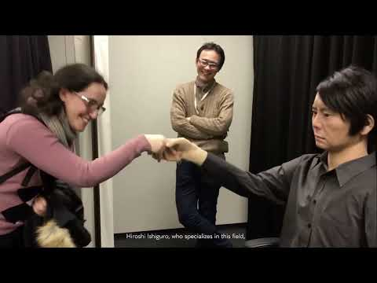

Ben Barış. TOBB Ekonomi ve Teknoloji Üniversitesi'nde Görsel İletişim Tasarımı öğrencisiyim. Tasarımı teknolojiyle birleştiren bir yaklaşım benimsiyor; kullanıcı deneyimi, görsel estetik ve problem çözme odaklı projeler üretmeye odaklanıyorum.
Farklı kültürleri keşfetmek ve yeni perspektifler edinmek, yaratıcı vizyonumu besleyen en güçlü ilham kaynaklarımdan biri. Seyahatlerim, tasarım dilimi daha kapsayıcı, çok yönlü ve yenilikçi bir noktaya taşıyor. Sporla olan aktif ilgim ise bana disiplin, dayanıklılık ve ekip çalışması gibi profesyonel hayatta kritik öneme sahip değerler kazandırdı.
Takım çalışmalarına hızlı adapte olur, yoğun tempoda dahi odaklı ve çözüm odaklı bir performans sergilerim. Sürekli öğrenme motivasyonuyla, yeni bilgi ve deneyimlere açık bir profesyonel yolculuk inşa etmeyi hedefliyorum.
Enerjik ve pozitif kişiliğim, iş birliği içinde olduğum kişilerle güçlü ve üretken ilişkiler kurmamı sağlıyor. Yeni projelere, yaratıcı fikirlere ve uluslararası iş birliklerine katkı sunmaya her zaman hazırım.
Jugendvision'da iletişim ve tasarım biriminden sorumluydum; proje bazlı görsel materyallere katkıda bulundum ve kuruluşun sosyal medya varlığını yönettim. Çeşitli girişimler için tasarım varlıkları oluşturdum, iletişim stratejilerini destekledim ve platformlar genelinde tutarlı bir görsel kimlik sağladım. Bu rol, uluslararası, genç odaklı bir ortamda grafik tasarım, içerik oluşturma ve dijital iletişim becerilerimi güçlendirdi.
Türkiye Radyo ve Televizyon Kurumu (TRT)
Pozisyon: Yapım ve Yayın Elemanı (Stajyer)
Dönem: 05/05/2025 – 15/08/2025
Konum: Ankara, Türkiye
TRT'nin Kurum İçi Prodüksiyon Departmanındaki stajım sırasında, önceden kaydedilmiş ve canlı yayın iş akışlarını destekledim; video düzenleme, içerik organizasyonu, kalite kontrol and kontrol odası operasyonlarında yardımcı oldum. Bu deneyim, video düzenleme, canlı yayın koordinasyonu ve hızlı tempolu prodüksiyon ortamlarına uyum sağlama becerilerimi güçlendirdi.
MSM Bilgi Teknolojileri Elektronik İletişim Kırtasiye Sanayi ve Ticaret Ltd. Şti.
Pozisyon: Bilgisayar Donanım Test Teknisyeni (Stajyer)
Dönem: 01/06/2020 – 27/10/2020
Konum: Ankara, Türkiye
Teknik destek ekibine bilgisayar sistemleri ve BT ürünlerinin satış, kurulum ve bakımına yardımcı olarak, müşteri desteği sağlayarak, donanım ve yazılım kurulumunun sorunsuz bir şekilde gerçekleşmesini sağlayarak ve BT altyapı sorunlarını çözerek katkıda bulundum. Ayrıca, tasarım ve yazılım geliştirme becerilerimi genişleterek, sorun giderme, kullanıcı arayüzü tasarımı ve sistem optimizasyonu konularında deneyim kazandım; bu da daha kapsamlı çözümler sunmamı ve teknik ekip içinde sürekli iyileştirmeyi desteklememi sağladı.
Tasarım, teknoloji ve araştırmanın kesişiminde ürettiğim projeleri burada bir araya getiriyorum. Her çalışma, hem yaratıcı yaklaşımımı hem de problem çözme süreçlerimi yansıtan özgün bir deneyim sunuyor.
TÜBİTAK 2209-A Projesi Araştırma ÇıktılarıAkademik Araştırma
Görsel Habercilikte Yapay Zekânın Rolü (TÜBİTAK 2209-A)
Destekleyen Kurum: TÜBİTAK (Üniversite Öğrencileri Araştırma Projeleri Destekleme Programı)
Görsel içerik üretimi, prompt mühendisliği ve habercilikte AI araçlarının (Leonardo AI vb.) etik ve pratik etkilerini inceleyen kapsamlı akademik araştırma projesi. Bu araştırma, yapay zekâ tabanlı uygulamaların görsel habercilikteki rolünü incelemektedir.

Yapay Zekâ Belgeseli Kapak GörseliVideo & Kurgu
Yapay Zekâ Belgeseli – Konsept, Prodüksiyon ve Kurgu
Alanlar: Belgesel Yapımı, Araştırma, Video Kurgu, Post-Prodüksiyon
Yapay zekâ teknolojilerinin gelişimini ve toplumsal etkilerini ele alan konsept ve kurgu tasarımı.
Blender ortamında gerçekleştirilmiş üç boyutlu nesne modelleme, sahne ışıklandırması ve render alma süreçleri.
Görsel İletişim Tasarımı Pasaportu TasarımıKonsept Tasarım
Görsel İletişim Tasarımı Pasaportu
Seyahat ve keşif teması üzerine kurgulanmış, marka yerleşimi ve layout süreçleri tamamlanmış kurumsal reklam projesi.
Kampanya Sloganı:"Tasarımın dili evrenseldir. Sınırların ötesine GİT."
Gönüllülük
SYAJ – Associação Juvenil Synergia
Konum: Braga, Portekiz
Dönem: Temmuz 2023 – Eylül 2023
Portekiz'in Braga şehrinde, Erasmus+ programı kapsamında Synergia ekibiyle birlikte sosyal sorumluluk ve çevre bilincine odaklanan bir gönüllülük projesine katıldım. Huzurevlerinde yaşlı bakımına destek verdim ve doğal kaynakların korunmasına yönelik girişimlere katıldım. Kano gibi su sporlarıyla ilgilenmem, liderlik ve kültürel farkındalık becerilerimi güçlendirdi. Bu deneyim, küresel bakış açımı genişleterek kişisel ve profesyonel gelişimime katkı sağladı.
Runkara Uluslararası Yarı Maratonu
Kurum: Dazspor / Gençlik ve Spor Bakanlığı
Dönem: Ekim 2023 / Ekim 2024 / Ekim 2025
RunKara Uluslararası Maratonu'nda gönüllü olarak görev aldım; katılımcı kayıtları, parkur kurulumu, malzeme dağıtımı ve istasyonların hazırlanması gibi çeşitli süreçlere destek verdim. Organizasyon ekibiyle yakın çalışarak etkinliğin sorunsuz bir şekilde gerçekleşmesine katkı sağladım. Bu deneyim, liderlik, ekip çalışması ve iletişim becerilerimi geliştirmemin yanı sıra farklı kültürlerden katılımcılarla etkileşim kurarak önemli bir kültürel paylaşım fırsatı sunmuş oldu.